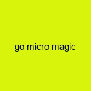

News
Psychedelic Effects
Psychedelic Effects
Altered States of Consciousness
Therapeutic Uses
Microdosing
Medical Research
Medical Research
Clinical Trials
Mental Health Applications
Neuroplasticity
Legal Status
Legal Status
Decriminalization Efforts
State-by-State Legislation
Comparisons with Other Substances
About Us
Cultural and Historical Significance of Magic Mushrooms Across Civilizations
Jun 25, 2025
Magic mushrooms, known scientifically as psilocybin mushrooms, have captured human imagination and interest for centuries.. Across various civilizations, these fungi have played significant roles in cultural and spiritual practices.
How to Boost Creativity and Innovation with Magic Mushrooms
Jun 25, 2025
How to Boost Creativity and Innovation with Magic Mushrooms In an era where creativity and innovation are the lifeblood of progress, individuals and organizations alike are constantly searching for ways to unlock their creative potential.. From brainstorming sessions to team-building retreats, the quest for enhanced creativity is relentless.
How to Experience Unparalleled Personal Growth Using Magic Mushrooms
Jun 25, 2025
Embracing Transformation: How to Experience Unparalleled Personal Growth Using Magic Mushrooms In the quest for self-improvement and personal growth, individuals often explore various paths, from meditation and mindfulness practices to therapy and life coaching.. Yet, one avenue that has increasingly garnered attention is the use of magic mushrooms, or psilocybin mushrooms, as a tool for profound transformation.
How to Navigate the Enchanting Effects of Magic Mushrooms for Beginners
Jun 25, 2025
How to Navigate the Enchanting Effects of Magic Mushrooms for Beginners Magic mushrooms, known scientifically as psilocybin mushrooms, have fascinated humans for centuries with their profound effects on consciousness and perception.. As these fungi gain increasing acceptance in modern society for both therapeutic and recreational purposes, more individuals are embarking on journeys to explore the captivating realms they unveil.
How to Transform Your Life Using the Power of Magic Mushrooms
Jun 25, 2025
How to Transform Your Life Using the Power of Magic Mushrooms In recent years, the conversation around magic mushrooms has shifted dramatically.. Once relegated to the realm of counterculture and psychedelia, these naturally occurring fungi are now being recognized for their potential to significantly transform lives.
Potential Therapeutic Benefits of Psilocybin for Mental Health Disorders
Jun 25, 2025
Exploring the Potential Therapeutic Benefits of Psilocybin for Mental Health Disorders In recent years, there has been a resurgence of interest in the therapeutic potential of psychedelic substances, particularly psilocybin, the psychoactive compound found in certain species of mushrooms.. Historically relegated to the fringes of scientific research and often associated with counterculture movements, psilocybin is now being reconsidered as a promising treatment for various mental health disorders.
Safe Usage and Dosage Guidelines for Magic Mushroom Experiences
Jun 25, 2025
Magic mushrooms, known scientifically as psilocybin mushrooms, have been used for centuries in various cultures for their psychoactive properties.. In recent years, they have gained popularity not only as a recreational substance but also as a tool for personal growth and therapeutic purposes.
The Science Behind Psilocybin: How Magic Mushrooms Affect the Brain
Jun 25, 2025
The Science Behind Psilocybin: How Magic Mushrooms Affect the Brain Magic mushrooms, long shrouded in mystery and myth, have found their place in the spotlight due to their active compound, psilocybin.. For centuries, indigenous cultures have revered these fungi for their spiritual and healing properties.
What is Microdosing and How is it Used with Magic Mushrooms?
Jun 25, 2025
Microdosing has emerged as a buzzword in recent years, capturing the curiosity and interest of those seeking alternative ways to enhance their mental health and cognitive functions.. Although the practice is often associated with psychedelics, it is magic mushrooms that have become particularly popular within this context.
What is Psilocybin and How Does it Affect the Brain?
Jun 25, 2025
Psilocybin is a naturally occurring psychedelic compound found in certain species of mushrooms, commonly referred to as "magic mushrooms." These mushrooms have been used for centuries in various cultural and spiritual rituals due to their mind-altering effects.. In recent years, psilocybin has gained attention in the medical and scientific communities for its potential therapeutic benefits and its intriguing effects on the human brain. At its core, psilocybin works by converting into psilocin once it enters the body.
What is the History of Magic Mushrooms in Human Culture?
Jun 25, 2025
Magic mushrooms, also known as psilocybin mushrooms, have held a significant place in human culture for thousands of years.. These fungi, containing the psychoactive compounds psilocybin and psilocin, have been revered for their mind-altering effects and spiritual significance across various cultures and time periods. The history of magic mushrooms can be traced back to prehistoric times, with evidence suggesting that early humans may have used them during shamanic rituals.
What is the Process for Safely Identifying and Foraging Magic Mushrooms?
Jun 25, 2025
Foraging for magic mushrooms can be an intriguing and rewarding adventure, offering a unique opportunity to connect with nature while exploring the fascinating world of fungi.. However, it is crucial to approach this activity with caution and respect due to the potential risks involved.
What is the Role of Magic Mushrooms in Modern Therapy?
Jun 25, 2025
Magic mushrooms, also known as psilocybin mushrooms, have been used for centuries in various cultures for their psychoactive properties.. However, in recent years, they have gained attention within the scientific community and modern therapy as potential tools for treating a range of mental health issues.